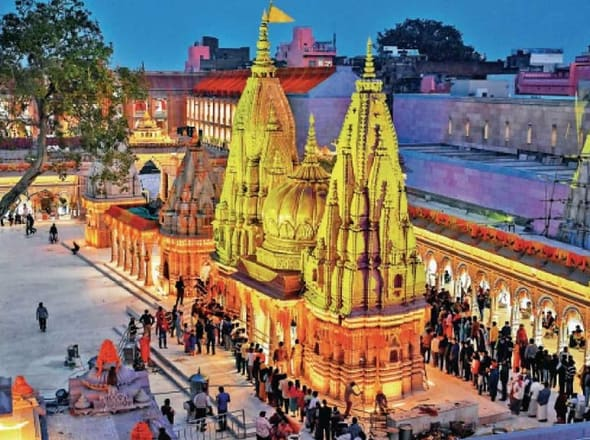

1 hour
Shri Kashi Vishwanath Temple
One of the 12 Jyotirlingas of Lord Shiva and one of the holiest sites in India. Walk the narrow lanes lined with flower and offering shops to the golden-domed shrine, where priests perform continuous rituals at the sacred Shivlinga.